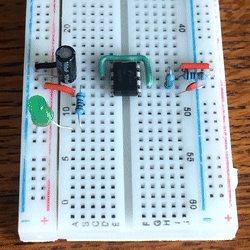
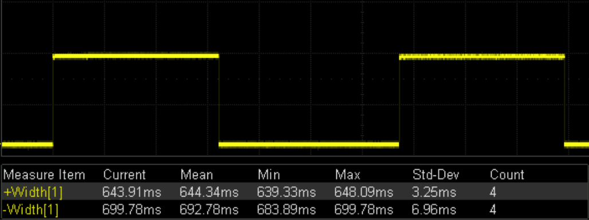
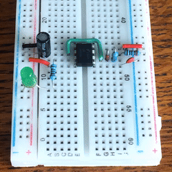
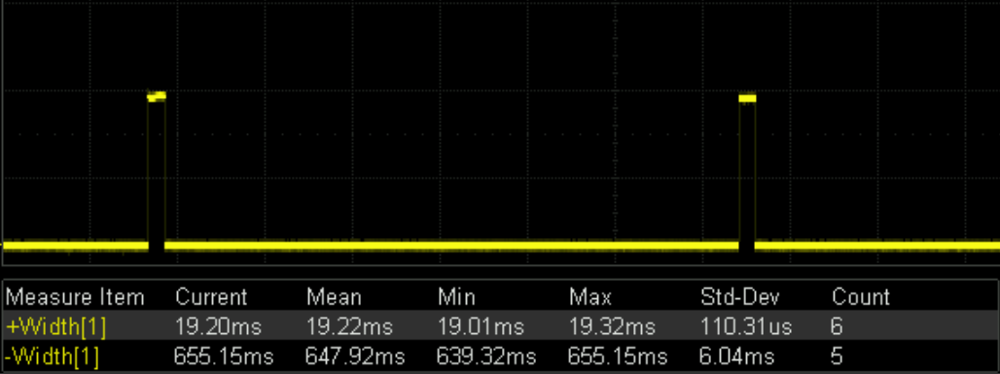
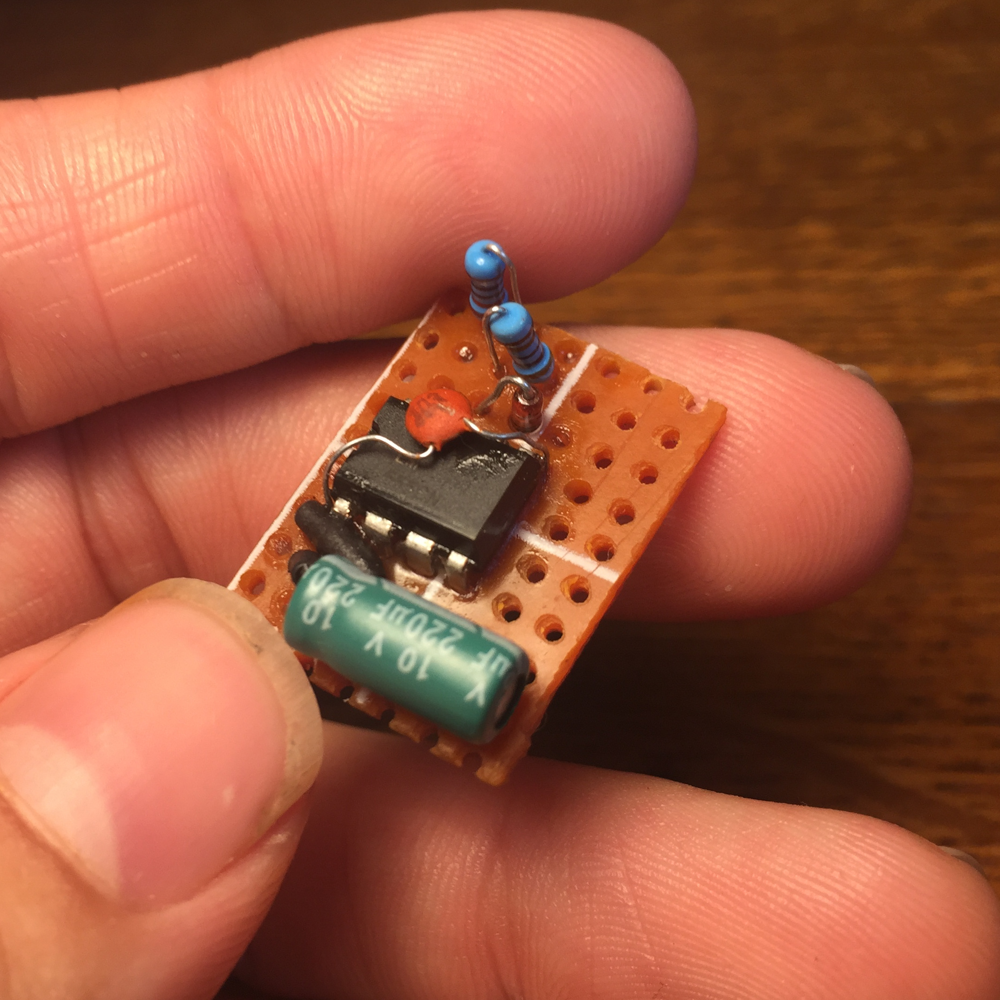
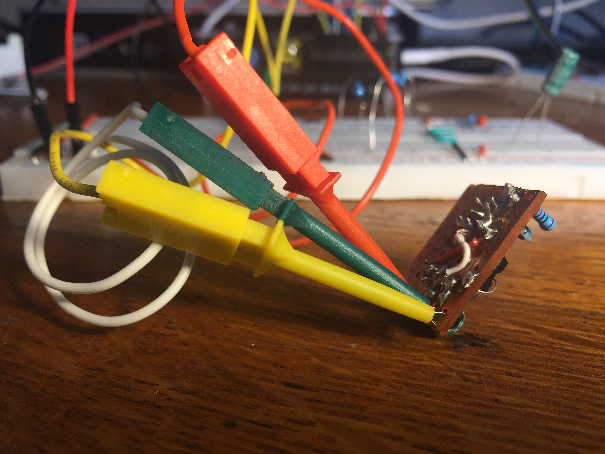
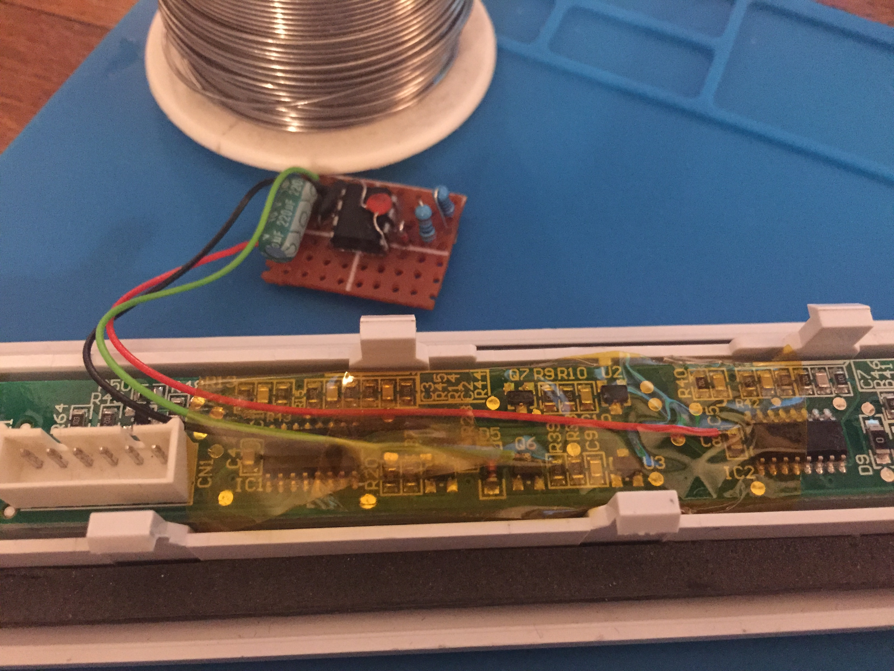
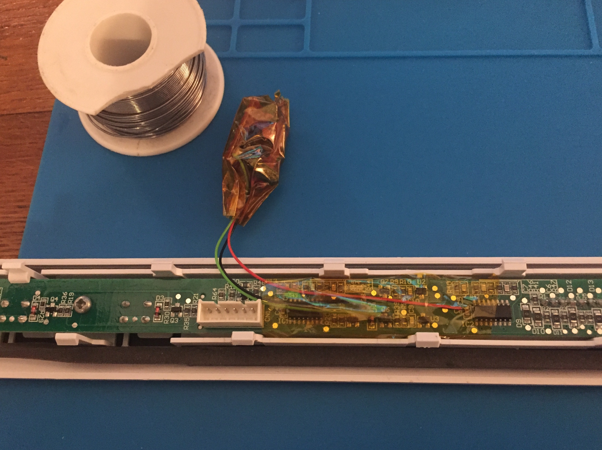
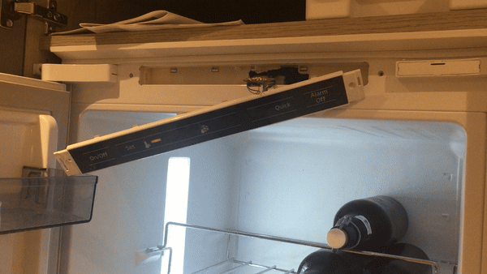

I own a fridge that has a really cool ‘feature’. It beeps if the door is open for more than 60 seconds. 95% of the time this is more annoying than it is helpful. In my opinion it should just shut up and trust that I know best.
In pursuit of this behavioural change I first tried to get at the piezo speaker so that I could rip it out. This turned out to be rather fruitless as the main board is deeply embedded within the fridge. I am not really willing to rip it out of the wall to get at the main circuit board, although I did try to tunnel my way in behind the control panel without much success:

Something I did have access to however was a daughter board that acts as the control panel for the fridge.

Pwning the panel
To try and understand the attack surface and see if it was possible to somehow disable the alarm I reverse engineered the functionality of the control panel. It essentially has 2 features:
- Button sensing (including a magnetic switch for door state detection)
- Light control
Both of these features are acheived via 6 pin connector on the daughter board:

The connector is actually a serial interface which permits control of two 8 bit shift registers (74HC595) on the daughter board:
|
|
|
This setup allows the fridge control of up to 16 bits on the daughter board, some of these bits are allocated to a specific LED on the board. Some are used to read button state.
Each button is directly wired up to the OUT pin. This was initially confusing to me as it would mean the fridge would have no way of determining which button was actually pressed at a given point in time. But that is where the shift registers come in, the button will not produce a signal on OUT unless its bit on the shift register is currently enabled:
|
|
The sequence for reading a button is therefor:
- Toggle the buttons enable bit on the shift register
- Read the state of the OUT pin
- Repeat for each button
I was able to prove this by having a Raspberry Pi don its freon cap and pretend to be the fridge. I was able to control the lights:

And detect button state:

Creating a modchip
Based on the findings from the control panel, there were a few methods of potentially disabling the alarm:
- Automatically press alarm off when the alarm sounds
- Hijack the magnetic sensor to tell the fridge it is closed
Controlling the alarm off button was a bit of a dead end for a few reasons.
- The alarm off button did not work until the alarm was actually sounding.
- The button makes its own sound when pressed, meaning if we pressed it on a timer we would be replacing one noise for another.
- The control panel had no feedback for when the alarm sounded, meaning we couldn’t detect and press either.
Hijacking the magnetic sensor had more potential but one of the caveats of this method was that the internal fridge light is disabled when the fridge is in it’s ‘door closed’ state.
To work around this I decided to wait as long as was possible (~59 seconds) and then tell the fridge that the door just closed for around ~100ms.
I was originally going to opt for a microcontroller as the basis for my modchip but what we have just described is essentially a timing circuit. So the desired functionality is actually achievable with just a simple 555 timer.
555 timer
A 555 timer in an astable mode is exactly what we require. Astable means that the 555 oscillates between its on and off state on repeat. We can control the time spent in the on and off state with a couple of resistors ($$r_1$$ & $$r_2$$) and a capacitor ($$c$$).
|
|
To calculate the off time ($$t_0$$) we can use:
$$t_0 = 0.694 \cdot r_2 \cdot c$$
And the on time ($$t_1$$):
$$t_1 = 0.694 \cdot (r_1 + r_2) \cdot c$$
We ideally want:
$$t_0 = 59000\ ms$$, $$t_1 = 100\ ms$$
But the above math highlights an issue with this, by default the above arrangement only allows a selection of duty cycles between 50% - 100%. Even making $$r_1$$ as small as possible ($$220\ \Omega$$) will result in around a 50% duty cycle:
 
The solution is to add a diode across $$r_2$$ which actually allows us to reach duty cycles between 0% and 50%:
|
|
 
Adding the diode changes the formula for calculating $$t_0$$ and $$t_1$$:
$$t_0 = 0.694 \cdot r_2 \cdot c$$, $$t_1 = 0.694 \cdot r_1 \cdot c$$
Notice that $$t_1$$ is no longer dependant on the value of $$r_2$$.
The values for the resistors and capacitor I settled on were:
$$r_1 = 220\ \Omega$$, $$r_2 = 300\ k\Omega$$, $$c = 220\ \mu F$$
Plugging these values into the formula we get:
$$t_0 = 0.694 \cdot 300000 \cdot 220 \cdot 10^{-6} = 45804\ ms$$
$$t_1 = 0.694 \cdot 220 \cdot 220 \cdot 10^{-6} = 48\ ms$$
This is pretty close to the what we were looking for, So I built a ‘modchip’ using those same values of $$r_1$$, $$r_2$$ and $$c$$:
 
I then wrote a small script called time-delta.py to capture the real off time in a test circuit overnight. This actually got even closer to our desired time of around 59 seconds:
> python3 time-delta.py
avg=56.970 min=55.283 max=58.160
Perfect! The only thing left to do now was wrap it in copious amounts of kapton tape and reinstall in the fridge:
 
Finally, here is a capture of the modchip breifly driving the magnetic sensor high when installed in the fridge:

Great success. We learned how to converse with the fridge and told it to shut its gob.